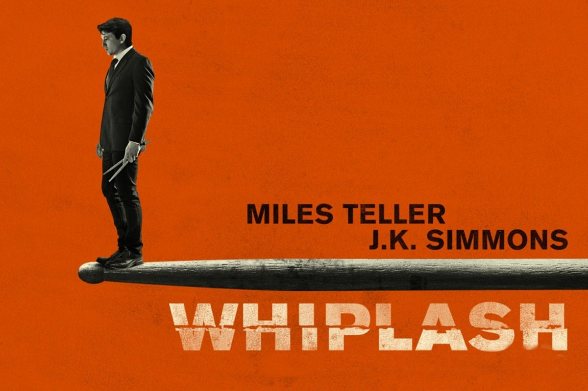
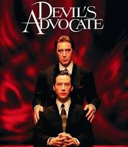
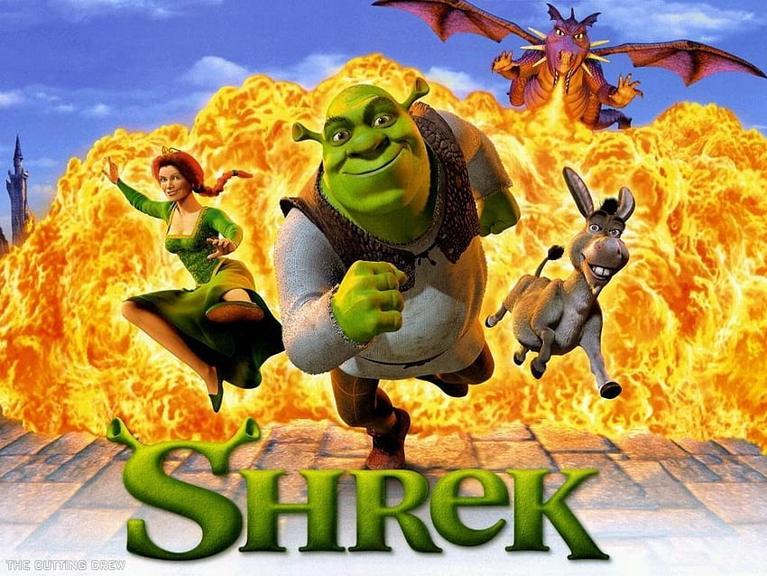

Filmografía de Culto Preferida
Las películas también ayudan a disfrutar y relajarse porque permiten desconectarte de la rutina y entrar en otras historias. Al ver una buena película no solo pasas el tiempo, también puedes reflexionar, inspirarte o simplemente divertirte. Cada una transmite emociones distintas, algunas te hacen reír, otras te hacen pensar y otras solo te dejan disfrutar el momento. En cierto sentido, es como darle una pausa a la vida cotidiana para ver las cosas desde otra perspectiva.
Entonces estas son mis 3 peliculas preferidas
1. Wiplash
2. El Abogado Del Diablo
3. Sherk
